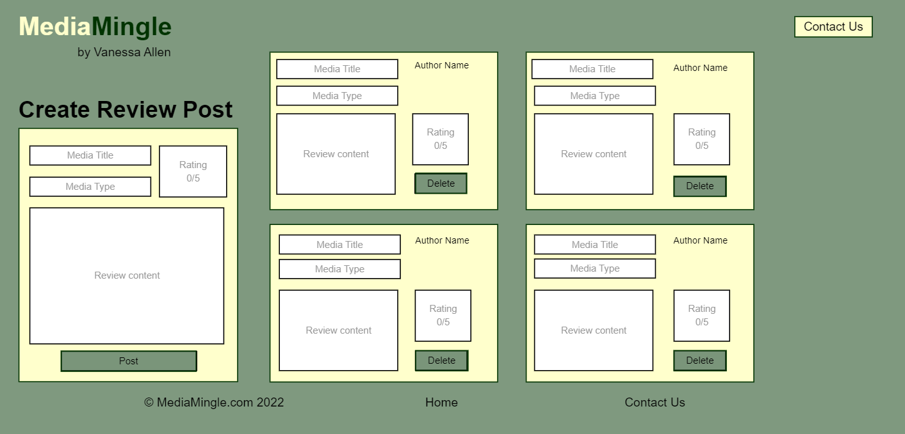
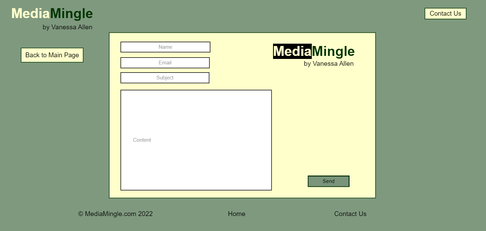

Application Overview / Vision
My application, MediaMingle, will be a media review app where users can log in, create an account, post what they thought about their chosen media, delete those posts, and rank the media from 1 to 5. The media will be primarily songs, games, movies, books, and shows, but anything classified as media can also be posted about.
User Stories
- As a user, I should be able to log in or create an account
- As a user, I should be able to make posts
- As a user, I should be able to delete my posts
- As a user, I should be able to give my chosen media a ranking between 1 and 5 stars
- As a user, I would like the app to be easy to use and look at
- As a user, I should be able to categorize my media type
- As an owner, I should be able to see the user's data being posted to the Firebase database
- As an owner, I would like the users to be able to contact me somewhere
- As an owner, I would like the app to function properly with no bugs or glitches
- As an owner, I would like the app to have under 20 HTTP requests
- As an owner, I would like the site to have an under 2MB Load
How will I use Firebase in my app?
I will use Firebase in my app by taking the user's posts and uploading them to the Firebase database. The data will be sent with the media type, media title, the user, user's review content, and the rating from the user. Then, the app will read the data from the Firebase database and write/display it on the webpage for everyone to view.
UI mockup using pencil
Welcome Page
Main Content Page
Contact Page
Flow chart with UX Function map